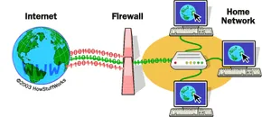

A web server is software that receives requests from clients (usually web browsers) and responds by sending web pages, files, or data over the internet or a local area network (LAN). Examples: Apache, Nginx, and IIS.

Apache HTTP Server is open source web server widely used for hosting websites.
| Website | Availability | Latest version |
|---|---|---|
| https://httpd.apache.org/ | Windows, Linux, macOS | 2.4.x |

Nginx is a high performance web server known for speed and handling many connections.
| Website | Availability | Latest version |
|---|---|---|
| https://nginx.org/ | Windows, Linux, BSD, macOS | 1.27.x |

Microsoft Internet Information Services(IIS) is a web server developed by Microsoft for Windows servers.
| Website | Availability | Latest version |
|---|---|---|
| https://www.iis.net/ | Windows only | IIS 10 |
Virtualization is defined as creating virtual versions of something. It lets multiple OSs run on one physical machine at the same time. It also allows administrators to divide the hardware and create multiple computers inside a single physical computer.
VirtualBox is a powerful x86 and AMD64/Intel64 virtualization product for enterprise as well as home use. Not only is Virtualbox an extremely feature rich, high performance product for enterprise customers, it is also the only professional solution that is freely available as Open Source Software under the terms of the GNU General Public License (GPL) version 3.
A virtual machine is a software-based emulation of a physical computer that runs its own operating system and applications using the resources of a single, powerful physical computer known as the host, using virtualization software.
Host Machine The host machine is the physical computer that provides the actual hardware (CPU, RAM, storage) and runs the virtualization software.
Guest Machine The guest machine is the virtual machine that runs inside the host. It uses virtual hardware and has its own operating system.
Debian is an all-volunteer organization dedicated to developing free software and promoting the ideals of the Free Software community.
It is a network security system that monitors and filters incoming and outgoing network traffic based on an organization's previously established security policies to establish a barrier between a trusted and untrusted network.

SSH (Secure Shell) is a network protocol that enables secure remote access to computers and servers over an unsecured network. It provides a secure, encrypted channel for communication, protecting data from eavesdropping and tampering.
An IP Address is a numerical label such as 192.0.3.0 that is assigned to a device connected to a computer network. Each computer inside a network has a unique IP Address.
A network mask (subnet mask) is a 32-bit number that separates an IP address into its network and host portions, and it is essential for directing network traffic. It tells devices which IP addresses are inside the same network and which are outside.

A port is a virtual communication endpoint identified by a number, that directs incoming and outgoing data to the correct application, such as a web browser or email client. A port is a conceptual address for networking programs to talk to each other. Examples: Port 80 → HTTP (websites) Port 443 → HTTPS (secure websites) Port 22 → SSH (secure shell)
Port forwarding is a networking technique that redirects incoming communication requests from an external network (like the internet) to a specific device and application within a private local area network (LAN).

Example: Forwarding port 8080 of a local server on my router lets people access that server from outside my home network.
Localhost refers to our own computer in a network, allowing us to test websites, programs, and servers locally without needing the internet. It always points to the loopback IP: 127.0.0.1
127.0.0.1 is the loopback address, also known as localhost, that refers to the computer it is on. When we open 127.0.0.1, we are connecting to our own computer or the computer we are on.
Git is the most widely used modern distributed version control system in the world today. It is a mature, actively maintained open source project originally developed in 2005 by Linus Torvalds, the famous creator of the Linux operating system kernel.
GitHub is the cloud-based version control system for hosting Git repositories for collaborations with other developers to store, share, and work together to write code.